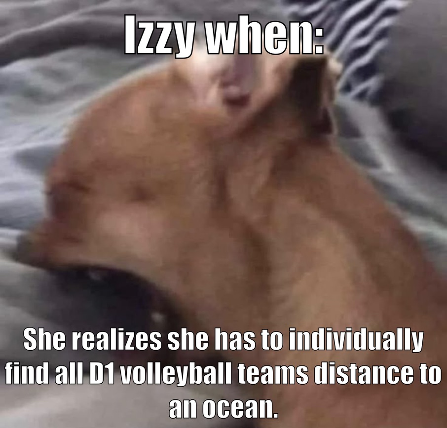
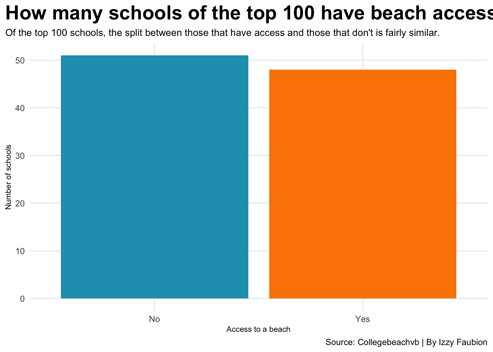

I have a few things to say before I get into the meat and potatoes of this blog and project. This was not the idea that I had coming into this week. My first idea was to compare if a distance from the coast affects how good a volleyball team is. I got this idea from some random dude I met at a club meeting I went to. I never found out his name but I hope he’s doing well. I thought that was a great idea because normally in other sports if you are near the coast you are usually pretty good, except in volleyball where it feels like the midwest is dominant.
That led me to Sunday night when I realized that my data was due so I went to gather data. I quickly learned that there was absolutely no data on how far colleges are from the coast. In order for me to get the data I would have to find out how the colleges were myself. Well my data was due in hours and I needed it done. So I got a list of every D1 volleyball team, and went to Google Earth. I would have to find a university, put a point down, measure that point to the nearest ocean or big gulf, and then finally put that distance into a spreadsheet. It was in this madness that I created this meme and sent it to a group chat with my friends.

I was told that was insane and I should maybe do something different, 68 teams and almost two hours deep in the spreadsheet.
So now I am going to tell you why college beach volleyball makes total and no sense at the same time.
I basically kept the same idea from the first idea for this project. I wanted to see if a team has access to a beach does that mean that they are better at volleyball. To start with I needed to see how many teams had access to a beach. To do this I took the top 100 beach volleyball teams and determined if they were near a beach. I cut off the distance to a one hour car ride. I live near two lakes and our trap team would travel about that distance every day to practice and the shooting range; and I felt that a college team could comfortably travel an hour every day for practice. If you don’t like that cut off, pound sand this is my project.
Code
library(tidyverse)library(ggrepel)bardata<-read_csv("beachyn.csv") |>count(beach)ggplot() +geom_bar(data = bardata, aes(x = beach, weight = n, fill = beach, labels =c("No Beach Access", "Has Beach Access"))) +scale_fill_manual(values =c(No ="#219EBC", Yes ="#FB8500") ) +labs(x ="Access to a beach", y ="Number of schools", title ="How many schools of the top 100 have beach access", subtitle ="Of the top 100 schools, the split between those that have access and those that don't is fairly similar.", caption ="Source: Collegebeachvb | By Izzy Faubion" ) +theme_minimal() +theme(plot.title =element_text(size =18, face ="bold"),axis.title =element_text(size =8), plot.subtitle =element_text(size =10), panel.grid.minor =element_blank(),plot.title.position ="plot" )+theme(legend.position ="none")

So about half have access and half don’t. This really isn’t anything big, but I thought more teams would have access. I would think that if you had access to a beach you would be higher in the rankings because you would be able to practice in the perfect conditions more.
The first graph tells us how many teams have access, not if they are better. The graph below shows how many games a team played and their winning percentage. All this data is from this week (week 8 in the season) because that is the only data I could get without paying. The teams are also scaled by size, the smaller the higher the rank. The schools with access to a beach are highlighted in orange.
# A tibble: 1 × 2
pct games
<dbl> <dbl>
1 0.599 25.4
Code
ggplot() +geom_point(data=percents, aes(x=totalgames, y=winpct, size=rank), color="grey", alpha=.3) +geom_point(data=beachful, aes(x=totalgames, y=winpct, size=rank), color="#fb8500")+geom_vline(xintercept =25.39394) +geom_hline(yintercept =0.5985466)+annotate("rect", fill ="#8ecae6", alpha =0.3, xmin =25.39394, xmax =Inf,ymin =0.5985466, ymax =Inf) +geom_text(aes(x=30, y=1, label="Playing and Winning more"), size=3)+labs(title="Does access to beach mean teams win more", subtitle="It appears that the teams that have access to a beach are playing and winning more games. It also \nappears that they are higher ranked than teams without access to beach.", x="Games Played", y="Teams Winning Percentage", caption ="Source: Collegebeachvb | By Izzy Faubion") +theme_minimal() +theme(plot.title =element_text(size =16, face ="bold"),axis.title =element_text(size =8), plot.subtitle =element_text(size=10), panel.grid.minor =element_blank() )+theme(legend.position ="none")
It appears that schools with access are playing and winning more games. They also are ranked higher. I mean it makes sense. If a team is near a beach, they can host more games and are practicing under the conditions they will be competing in.
This is where things are going to get weird. While I was looking at the data on the Collegebeachvb website I noticed that there was no Big Ten conference. I was planning on comparing the Big Ten since you know, the Big Ten is pretty good at volleyball. So I went to find out what conference Nebraska is in, I filtered by DI and just started going through until I found it. Come to find out, Nebraska is not in a conference and is independent. Nebraska is also the only DI program who is independent. This meant that I should compare Nebraska to other independent schools. When I asked what I should compare it with, my professor said I should compare the athletics budget. I took the top 10 teams that are independent and found their athletic expenses and revenues.
Code
indiebudg<-read_csv("indie10.csv") |>select(college, Revenue, Expenses)nu<-indiebudg |>filter(college=="Nebraska")ws<-indiebudg |>filter(college=="Wayne State College")cm<-indiebudg |>filter(college=="Colorado Mesa")nvb<-indiebudg |>filter(college=="Nebraska Volleyball")ggplot() +geom_point(data=indiebudg, aes(x=Expenses, y=Revenue), color="gray")+geom_point(data=nu, aes(x=Expenses, y=Revenue), color="#d00000")+geom_point(data=cm, aes(x=Expenses, y=Revenue), color="#5D0022")+geom_point(data=nvb, aes(x=Expenses, y=Revenue), color="#d00000")+geom_text_repel(data=nu, aes(x=Expenses, y=Revenue, label=college))+geom_text(aes(x=25, y=30, label="Colorado Mesa"))+geom_text_repel(data=nvb, aes(x=Expenses, y=Revenue, label=college))+labs(x="Expenses (millions)", y="Revenue (millions)", title="Who let Nebraska in here", subtitle="Out of the Independent Conference, it feels weird that Nebraksa is grouped with D2 and D3 schools. It \nmakes neven less sense when you see how much the schools are spending on their athletics.", caption="Source: Collegebeachvb | By Izzy Faubion" ) +theme_minimal() +theme(plot.title =element_text(size =18, face ="bold"),axis.title =element_text(size =8), plot.subtitle =element_text(size=10), panel.grid.minor =element_blank() )
So as the graph shows, Nebraska is one heck of an outlier. Nebraska spends more on the volleyball team than most schools spend in total. The only two teams that spend more are Colorado Mesa and Wayne State College, yes the Wayne State two hours away. I don’t have enough time to compare every conference in the sport, but from a quick glance at them something else weird appears. It seems like teams in conferences have been moved around without much thought.
Boise State is a prime example. There is no Pac-12 conference, since most of the schools are joining this year from the Mountain West conference. Boise State would be put in the Mountain Pacific Conference since that’s where most of the other future Pac-12 schools are. NOPE. They’re in the Big 12 conference with Arizona, Arizona State, TCU, Florida State, and South Carolina. For those who don’t know the conferences that well, only half of those schools are actually in the Big 12.
This is where I would normally talk about the big thing I learned doing this project. I don’t know what I really learned. I guessed before doing research that having access to a beach would mean that you’d likely be good at beach volleyball. It’s like how USC probably doesn’t have an amazing hockey team, the sport just isn’t good for the location. The main takeaway for me is that this sport is set up in a way that goes against all logic.